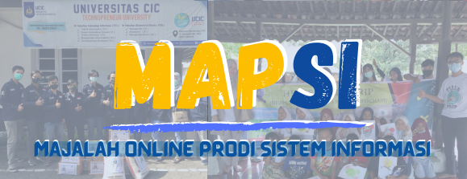

Majalah Online Prodi Sistem Informasi Vol 1
MAPSI adalah majalah online yang dapat diakses seluruh orang dimana majalah MAPSI berisi artikel–artikel dari kegiatan-kegiatan yang telah diselenggarakan oleh prodi sistem informasi UCIC dalam kurun waktu 1 tahun. Terdapat kegiatan penerimaan mahasiswa baru, webinar series sistem informasi, podcast HIMASI, HIMASI Charity, GERMAS, dan masih banyak lagi kegiatan seru lainnya yang di rangkum dalam MAPSI pada edisi perdana ini.